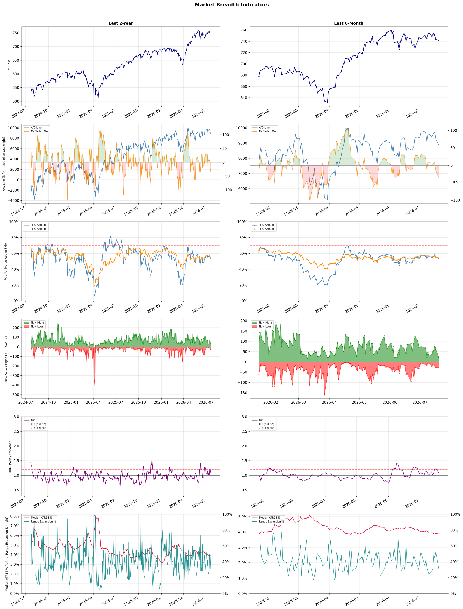

A daily market breadth and sector rotation report for active investors
| Item | Read |
|---|---|
| Regime | Selective Risk-On |
| Risk posture | Cautious |
| Universe | 1,338 stocks tracked · 22 new 52-week highs · 30 active swing setups |
| Breadth | 53.1% of tracked stocks are above SMA50 — neutral range, new lows exceed new highs (29 vs 22), McClellan oscillator (breadth momentum) is negative at -35.9 |
| Leadership | Oil & Gas Refining & Marketing, Insurance - Property & Casualty, and Diagnostics & Research |
| Weakest groups | Other Industrial Metals & Mining, Uranium, and Gold |
Use this report to prioritize research and chart review; validate entries, stops, liquidity, earnings, and risk before acting.
| Item | Read |
|---|---|
| Primary read | Selective Risk-On regime with Cautious risk posture. |
| Research queue | PBF, DINO, MPC, VLO, UGP |
| Leadership focus | Oil & Gas Refining & Marketing, Insurance - Property & Casualty, and Diagnostics & Research |
| Caution list | Other Industrial Metals & Mining, Uranium, and Gold |
| Review prompt | Check extension risk, chart location, fundamentals, valuation, and earnings before using any research row. |
| Item | Read |
|---|---|
| Primary read | 3 active risk warnings; use screen output as watchlist input only. |
| Bullish screens | DINO, MPC, PBF, KRG, GNW |
| Bearish screens | SPRY, TLRY, PSKY, HTZ, BXMT |
| Alerts / levels | Automated trigger, stop, ATR, liquidity, reward/risk, and event-risk levels are pending future enrichment. |
| Review prompt | Open the linked chart, define trigger and invalidation, then check liquidity and event risk independently. |
Risk Posture: Cautious — screen backdrop is selective; prioritize research in top-ranked groups
Metric context: McClellan below -50 = elevated selling pressure; below -100 = washout territory. Range Expansion = share of stocks with daily range above their 20-day average. Signal Density = share of tracked names appearing in signal screens.
| Breadth Date | % > SMA50 | % > SMA200 | New Highs | New Lows | McClellan | Median Range | Avg Range | Median ATR14 | Range Expansion | Signal Density |
|---|---|---|---|---|---|---|---|---|---|---|
| 2026-07-20 | 53.1% | 54.4% | 22 | 29 | -35.9 | 3.1% | 3.6% | 3.9% | 30.7% | 7.7% |

Prior comparison date: July 17, 2026
| Metric | Prior | Current | Change |
|---|---|---|---|
| Regime | Selective Risk-On | Selective Risk-On | unchanged |
| Risk Posture | Selective | Cautious | changed |
| % > SMA50 | 55.7% | 53.1% | -2.6 pts |
| % > SMA200 | 55.0% | 54.4% | -0.6 pts |
| New Highs | 60 | 22 | -38 |
| New Lows | 27 | 29 | -2 |
Top-10 industries entering: Advertising Agencies and Healthcare Plans. Top-10 industries leaving: Biotechnology and Insurance - Life. New multi-signal long setups: EPRT, LNG, PAA, SGHC. New multi-signal short setups: BXMT, HTZ, PSKY, SPRY, TLRY.
| Status | Tickers | Read |
|---|---|---|
| Added | ABSI, ALHC, ALL, ANNX, BXMT, CB, COTY, EPRT | New technical screen matches vs prior report. |
| Removed | ACHC, AFL, AHR, CF, CHRW, CTRE, CTVA, CVS | No longer present in today's technical screen matches. |
| Still Active | DBRG, DINO, GNW, KRG, MPC, ORI, PBF | Appeared in both current and prior reports. |
| Promoted | none | Model Screen Score improved by at least 15 points. |
| Downgraded | ORI | Model Screen Score declined by at least 15 points. |
| Direction | Industry | ETF | Prior Rank | Current Rank | Days | Rank Change |
|---|---|---|---|---|---|---|
| Rose | Oil & Gas Refining & Marketing | CRAK | 82 | 1 | 35 | +81 |
| Rose | Household & Personal Products | XLP | 91 | 13 | 42 | +78 |
| Rose | REIT - Healthcare Facilities | XLRE | 81 | 7 | 42 | +74 |
| Rose | Insurance Brokers | N/A | 81 | 14 | 35 | +67 |
| Rose | Insurance - Property & Casualty | KIE | 65 | 2 | 42 | +63 |
Bull: The Oil & Gas Refining & Marketing sector, as represented by the CRAK ETF, is experiencing rising relative strength primarily due to a combination of improving market conditions and heightened investor interest following a prolonged period of underperformance. Recent headlines indicate a sector-wide rally, with companies like Marathon Petroleum outperforming broader market gains, while hopes for Middle East de-escalation suggest a stabilization in supply risks, which could bolster refining margins. Additionally, the ETF hitting a new 52-week high signals growing confidence in the sector's profitability amidst potential demand fluctuations.
Bear: While the recent rally in the Oil & Gas Refining & Marketing sector may seem promising, it is crucial to consider the underlying vulnerabilities that could undermine this momentum. The optimism surrounding Middle East de-escalation may be premature, as geopolitical tensions can quickly resurface, impacting oil supply and prices. Furthermore, the potential for declining global demand due to economic slowdowns, coupled with increasing regulatory pressures on fossil fuels, could erode refining margins and negate the current bullish sentiment, making the recent highs of the CRAK ETF potentially unsustainable.
Verdict: The Oil & Gas Refining & Marketing sector is experiencing a rally due to improving market conditions, heightened investor interest, and the potential stabilization of supply risks following hopes for Middle East de-escalation, which could enhance refining margins. However, investors should remain cautious of the key risk posed by geopolitical tensions that could quickly escalate, as well as the potential for declining global demand and increasing regulatory pressures that may undermine the sector's profitability. It is advisable to monitor these geopolitical developments and economic indicators closely before making investment decisions.
Sources: Yahoo Finance, Google News
Bull: The Household & Personal Products sector is likely experiencing rising relative strength due to its resilience amid broader market volatility, as indicated by the recent headlines highlighting consumer staples' stability compared to declining sectors like chipmakers. Additionally, the positive sentiment surrounding long-term value in consumer staples, as noted in articles from Morningstar and The Motley Fool, suggests that investors are increasingly seeking dependable dividend growth and value stocks in a potentially uncertain economic environment, further bolstering the appeal of this sector.
Bear: While the Household & Personal Products sector may show rising relative strength in the short term, this could be misleading as it often reflects defensive positioning rather than genuine growth potential. The recent headlines indicate a broader market retreat, particularly in sectors like chipmakers, which may lead investors to flock to consumer staples out of fear rather than confidence in their long-term performance. Additionally, the focus on value and dividend growth may mask underlying issues such as rising input costs, supply chain disruptions, and changing consumer preferences that could erode margins and growth prospects in the household and personal products space.
Verdict: The Household & Personal Products sector is likely gaining traction due to its perceived stability and resilience in a volatile market, as investors seek safe havens in consumer staples amid broader economic uncertainty. However, the key risk lies in the potential for rising input costs and supply chain disruptions, which could undermine profit margins and growth prospects, suggesting that while the sector may appear strong now, its long-term viability could be challenged. Investors should monitor these underlying issues closely while considering positions in this sector.
Sources: Yahoo Finance, Google News
Bull: The rising relative strength of the Healthcare Facilities REIT sector can be attributed to a growing recognition of its stability and resilience amid broader market volatility, particularly as financial stocks face declines, as indicated in multiple sector updates. Additionally, positive sentiment surrounding healthcare investments, highlighted by articles discussing the best healthcare REITs for retirement portfolios and overall market outperformance, suggests that investors are increasingly seeking safe havens in the healthcare sector, which is bolstered by demographic trends and consistent demand for healthcare services.
Bear: While the rising relative strength of Healthcare Facilities REITs may seem promising, it is essential to consider the potential headwinds posed by rising interest rates and inflation, which can significantly impact the cost of capital and operational expenses for these REITs. Additionally, the broader market volatility, particularly in financial stocks, may lead to a flight to safety that could be temporary, with investors potentially overvaluing the stability of the healthcare sector without fully accounting for the cyclical nature of real estate and potential regulatory challenges in healthcare.
Verdict: The Healthcare Facilities REIT sector is experiencing rising relative strength due to its perceived stability and resilience amid market volatility, driven by demographic trends and consistent demand for healthcare services. However, investors should remain cautious of potential headwinds from rising interest rates and inflation, which could adversely affect the cost of capital and operational expenses, potentially undermining the sector's long-term performance.
Sources: Yahoo Finance, Google News
Bull: The rising relative strength of the Insurance Brokers industry can be attributed to robust demand for insurance services and ongoing consolidation through mergers and acquisitions, as highlighted in the Yahoo Finance article discussing stocks poised to benefit from these trends. Additionally, strong earnings reports, such as Ryan Specialty's impressive Q1 performance, indicate solid operational fundamentals, suggesting that despite fears of AI disruption, the sector is well-positioned to adapt and thrive in a changing landscape.
Bear: While the rising relative strength of the Insurance Brokers industry may suggest robust demand and consolidation, the recent headlines highlight significant disruption fears stemming from AI advancements that could fundamentally alter the landscape of insurance brokerage. The selloff triggered by these concerns indicates that investors are increasingly wary of the long-term viability of traditional brokerage models in the face of technological innovation, which could undermine the supposed operational strength and growth potential that bullish analysts are touting. Additionally, the focus on M&A activity may distract from the inherent risks of overvaluation and integration challenges that could arise in a rapidly evolving market.
Verdict: The Insurance Brokers industry is experiencing rising strength due to robust demand for insurance services and ongoing consolidation, which is bolstered by strong earnings reports from key players like Ryan Specialty. However, the key risk lies in the potential disruption from AI advancements, which could challenge traditional brokerage models and raise concerns about overvaluation and integration issues amid a rapidly changing market. Investors should closely monitor technological developments and their impact on operational viability while considering opportunities in well-positioned firms.
Sources: Google News
Bull: The rising relative strength of the Property & Casualty insurance sector, as reflected in the State Street SPDR S&P Insurance ETF (KIE), can be attributed to the industry's ongoing digitalization and exposure growth, which are driving operational efficiencies and expanding market opportunities. Recent headlines highlight a bullish sentiment towards specific stocks like Globe Life and Aon, as well as a positive outlook for P&C insurers amid favorable Q1 performance, indicating strong investor confidence and a robust market environment for the sector. Additionally, the mention of "5 P&C Insurers to Buy" suggests that analysts are identifying significant growth potential, further supporting the bullish case for the industry.
Bear: While the rising relative strength of the Property & Casualty insurance sector may seem promising, it is crucial to consider the potential headwinds that could undermine this bullish sentiment. Increased competition, rising claims costs due to natural disasters and inflation, and regulatory pressures could erode profit margins for insurers, making it difficult for them to sustain the operational efficiencies and growth that the bull thesis relies on. Furthermore, the digitalization trend, while beneficial, also requires significant investment, which could strain financial resources and divert attention from core underwriting practices.
Verdict: The Property & Casualty insurance sector is experiencing a bullish trend driven by digitalization and growth in market opportunities, as evidenced by strong performance in ETFs like KIE and positive analyst sentiment towards specific stocks. However, investors should remain cautious of key risks, including rising claims costs from natural disasters and inflation, as well as increased competition and regulatory pressures that could impact profit margins and challenge the sustainability of operational efficiencies.
Sources: Yahoo Finance, Google News
| Direction | Industry | ETF | Prior Rank | Current Rank | Days | Rank Change |
|---|---|---|---|---|---|---|
| Fell | Solar | TAN | 8 | 78 | 42 | -70 |
| Fell | Electrical Equipment & Parts | XLI | 10 | 80 | 42 | -70 |
| Fell | Copper | COPX | 15 | 84 | 28 | -69 |
| Fell | Semiconductor Equipment & Materials | SOXX | 2 | 70 | 35 | -68 |
| Fell | Communication Equipment | IYZ | 7 | 74 | 42 | -67 |
Bear: While the bull analyst attributes the recent decline in solar stocks to macroeconomic factors and regulatory concerns, a more pressing issue may be the oversaturation and speculative nature of the market following the substantial rally in TAN. The 82% increase in TAN masks underlying vulnerabilities, such as potential overvaluation and profit-taking by investors, which could lead to a more significant correction as enthusiasm wanes. Additionally, the rising consumption taxes in China may not only dampen demand but also signal a shift in government policy that could hinder long-term growth prospects for the solar sector, suggesting that the current bullish sentiment may be misplaced.
Bull: The recent decline in the relative strength of the solar industry, despite strong earnings and bullish outlooks, can be attributed to macroeconomic factors such as rising consumption taxes in China, which may dampen demand for solar products, as indicated in the Bloomberg headline. Additionally, the market's reaction to the tax implications highlighted in TAN's rally and the cautious sentiment from analysts, as seen in the article about selling TAN, suggest that investors are concerned about potential regulatory headwinds and market corrections following significant price increases. This combination of factors has likely contributed to the relative weakness of solar stocks despite their long-term growth potential.
Verdict: The recent decline in the solar industry appears to be fundamentally driven by macroeconomic factors, particularly rising consumption taxes in China, which could dampen demand and signal a shift in government policy that may hinder long-term growth. However, a key risk highlighted by the bear thesis is the potential for market oversaturation and overvaluation following TAN's substantial rally, which could lead to profit-taking and a significant correction as investor enthusiasm diminishes. Investors should closely monitor regulatory developments and market sentiment to navigate potential volatility in the sector.
Sources: Yahoo Finance, Google News
Bear: While the bull analyst attributes the decline in the Electrical Equipment & Parts sector to semiconductor weakness and broader market concerns, it is crucial to recognize that this sector faces fundamental challenges beyond just market sentiment. Rising raw material costs, supply chain disruptions, and increasing competition from alternative energy solutions are significant headwinds that could hinder growth and profitability. Furthermore, the ongoing transition to more sustainable energy sources may render traditional electrical equipment less relevant, leading to a long-term structural decline in demand.
Bull: The Electrical Equipment & Parts sector is likely experiencing a decline in relative strength due to broader market concerns surrounding semiconductor stocks, as indicated by the recent headlines highlighting investor retreat from chipmakers. This weakness in the semiconductor sector can create a ripple effect, impacting related industries like electrical equipment that rely on semiconductor technology for their products. Additionally, the mixed economic reports and fluctuating investor sentiment towards ETFs, as noted in the headlines, may contribute to cautious investment behavior in the sector, overshadowing its long-term growth potential.
Verdict: The Electrical Equipment & Parts sector is likely declining due to a combination of broader market concerns, particularly the weakness in semiconductor stocks, and fundamental challenges such as rising raw material costs and supply chain disruptions. Additionally, the shift towards sustainable energy solutions poses a significant risk, potentially diminishing demand for traditional electrical equipment. Investors should closely monitor these trends and consider reallocating resources to sectors more aligned with the evolving energy landscape.
Sources: Yahoo Finance, Google News
Bear: While the bull analyst attributes the falling relative strength of COPX to concerns over global manufacturing and competitive dynamics, it’s crucial to recognize that the broader economic environment is increasingly uncertain, with rising interest rates and potential recessions looming. This uncertainty can dampen demand for copper, particularly if infrastructure spending and electrification initiatives falter. Additionally, the narrative that copper is essential for the AI boom may be overstated, as technological advancements could lead to alternative materials or methods that reduce copper's necessity, further pressuring prices and investor sentiment in the sector.
Bull: Copper's relative strength is likely falling due to concerns over global manufacturing weakness, as highlighted in the headline "If Global Manufacturing Weakens, Here’s What Happens to This Copper ETF." This sentiment is compounded by the competitive landscape between copper miners and copper futures, as discussed in "COPX vs. CPER," which may lead investors to reassess their positions amid fluctuating demand expectations. Additionally, while copper is being positioned as a critical component for the electrification and AI boom, as noted in multiple headlines, the current market dynamics may not yet reflect this potential, leading to a temporary dip in relative strength.
Verdict: The copper industry is experiencing a decline in relative strength primarily due to concerns over weakening global manufacturing and rising economic uncertainty, which could dampen demand for copper. A key risk from the bear case is the potential for alternative materials to replace copper in technological applications, coupled with the looming threat of rising interest rates and recession, which could further suppress infrastructure spending and electrification initiatives. Investors should closely monitor macroeconomic indicators and demand forecasts to assess their positions in copper-related assets.
Sources: Yahoo Finance, Google News
Bear: While the long-term potential of the semiconductor industry is often touted, the current market dynamics suggest a troubling overvaluation and saturation that could undermine future growth. The significant surge of 76% in SOXX raises red flags about sustainability, especially when prominent figures like Ed Yardeni predict further declines. Additionally, the contrasting views from analysts and CEOs may reflect a disconnect from the realities of a market that is not only overcrowded but also facing increasing competition and potential regulatory challenges, which could hinder profitability and growth prospects in the near term.
Bull: The Semiconductor Equipment & Materials sector is experiencing a decline in relative strength primarily due to concerns over market saturation and potential overvaluation, as highlighted by the headlines indicating that chip stocks are both "overcrowded and oversold." Additionally, Ed Yardeni's warning that semiconductor stocks could fall another 12% suggests a bearish sentiment that may be weighing on investor confidence. However, the positive outlook from industry leaders, such as Jensen Huang's assertion that semiconductors will become the largest industry in the world, indicates that the long-term fundamentals remain strong, potentially setting the stage for a rebound.
Verdict: The Semiconductor Equipment & Materials sector is currently experiencing a decline due to concerns over market saturation and overvaluation, as evidenced by the significant 76% surge in SOXX, which raises questions about sustainability. Key risks include potential further declines, as highlighted by Ed Yardeni's prediction of a 12% drop, alongside increasing competition and regulatory challenges that could hinder profitability. Investors should remain cautious and closely monitor market signals and valuation metrics before making investment decisions.
Sources: Yahoo Finance, Google News
Bear: While the bull analyst highlights selective optimism in certain stocks, the overall trend of falling relative strength in the Communication Equipment sector signals deeper underlying issues, such as potential overvaluation and waning demand for traditional communication infrastructure. The recent gains in stocks like Lumentum and Viavi may be short-lived, driven by speculative trading rather than sustainable growth, especially given the uncertainty surrounding Charter Communications and the broader market's shift towards software and services over hardware. This suggests that the sector may face significant headwinds as investors reassess the long-term viability of these companies amidst changing technological landscapes.
Bull: The Communication Equipment sector is experiencing a decline in relative strength primarily due to mixed market sentiment and varying performance among key players. While companies like Lumentum Holdings and Viavi Solutions have seen significant gains amid a sector-wide rally, the overall outlook remains cautious, as indicated by the uncertainty surrounding Charter Communications' stock and the broader market's focus on hardware-software performance dispersion. This suggests that investors are selectively optimistic about certain stocks while remaining wary of the sector's overall stability, contributing to the relative weakness in Communication Equipment compared to other industries.
Verdict: The Communication Equipment sector's decline in relative strength is primarily driven by a combination of mixed market sentiment and a shift in investor focus towards software and services over traditional hardware, indicating potential overvaluation and decreasing demand for legacy infrastructure. The key risk highlighted by the bear case is that the recent gains in select stocks may not be sustainable, as they could be influenced by speculative trading rather than robust fundamentals, prompting investors to reassess their positions in light of evolving technological trends. Investors should remain cautious and consider reallocating to sectors with stronger growth prospects to mitigate potential losses.
Sources: Yahoo Finance, Google News
| Industry | Rank | ETF | 7d | 14d | 28d | 42d | Chg 42d | Size | 20D | 60D | Composite | Active Setups |
|---|---|---|---|---|---|---|---|---|---|---|---|---|
| Oil & Gas Refining & Marketing | 1 | CRAK | 4 | 30 | 68 | 53 | +52 | 7 | 34.6% | 27.9% | 0.968 | 0 |
| Insurance - Property & Casualty | 2 | KIE | 1 | 5 | 34 | 65 | +63 | 8 | 10.4% | 15.4% | 0.894 | 1 |
| Diagnostics & Research | 3 | N/A | 2 | 4 | 12 | 15 | +12 | 16 | 11.5% | 28.6% | 0.893 | 1 |
| Advertising Agencies | 4 | N/A | 7 | 9 | 17 | 33 | +29 | 7 | 6.7% | 33.6% | 0.862 | 0 |
| Medical Care Facilities | 5 | IHF | 3 | 7 | 22 | 49 | +44 | 9 | 12.5% | 16.3% | 0.859 | 0 |
| REIT - Office | 6 | XLRE | 16 | 8 | 9 | 9 | +3 | 8 | 5.6% | 30.8% | 0.853 | 0 |
| REIT - Healthcare Facilities | 7 | XLRE | 19 | 17 | 59 | 81 | +74 | 10 | 12.3% | 16.3% | 0.853 | 1 |
| Health Information Services | 8 | N/A | 5 | 6 | 16 | 24 | +16 | 12 | 11.5% | 26.6% | 0.852 | 0 |
| REIT - Retail | 9 | N/A | 34 | 24 | 42 | 35 | +26 | 11 | 8.3% | 9.3% | 0.840 | 1 |
| Healthcare Plans | 10 | IHF | 6 | 1 | 1 | 6 | -4 | 10 | 4.6% | 46.9% | 0.839 | 1 |
Rank columns (7d–42d) show the industry's rank that many trading days ago — lower is stronger. Chg 42d = rank change vs 42 trading days ago — positive means the industry moved up. 20D and 60D are the mean stock return within the industry over that period. Active Setups: count of today's swing-trade candidates from this industry appearing across all signal screens.
| Industry | Rank | ETF | 7d | 14d | 28d | 42d | Chg 42d | Size | 20D | 60D | Composite | Active Setups |
|---|---|---|---|---|---|---|---|---|---|---|---|---|
| Other Industrial Metals & Mining | 88 | N/A | 88 | 83 | 46 | 73 | -15 | 21 | -25.5% | -30.4% | 0.039 | 0 |
| Uranium | 87 | URA | 84 | 88 | 80 | 95 | +8 | 6 | -20.7% | -36.0% | 0.049 | 0 |
| Gold | 86 | GDX | 85 | 87 | 85 | 96 | +10 | 27 | -17.1% | -28.3% | 0.067 | 0 |
| Aerospace & Defense | 85 | ITA | 86 | 70 | 75 | 26 | -59 | 26 | -19.1% | -23.5% | 0.107 | 0 |
| Copper | 84 | COPX | 82 | 85 | 15 | 76 | -8 | 6 | -15.8% | -16.5% | 0.116 | 0 |
| Utilities - Renewable | 83 | N/A | 87 | 76 | 41 | N/A | N/A | 7 | -17.9% | -14.1% | 0.121 | 0 |
| Specialty Industrial Machinery | 82 | N/A | 80 | 73 | 47 | 68 | -14 | 21 | -13.7% | -18.9% | 0.168 | 1 |
| Chemicals | 81 | N/A | 83 | 86 | 82 | 89 | +8 | 8 | -11.1% | -22.8% | 0.172 | 1 |
| Electrical Equipment & Parts | 80 | XLI | 64 | 41 | 11 | 10 | -70 | 12 | -28.8% | -9.4% | 0.178 | 0 |
| Utilities - Independent Power Producers | 79 | XLU | 56 | 75 | 57 | 97 | +18 | 5 | -9.3% | -10.8% | 0.182 | 0 |
Rank columns (7d–42d) show the industry's rank that many trading days ago — lower is stronger. Chg 42d = rank change vs 42 trading days ago — positive means the industry moved up. 20D and 60D are the mean stock return within the industry over that period. Active Setups: count of today's swing-trade candidates from this industry appearing across all signal screens.
These are research candidates from top-ranked stocks, capped at five names per industry to avoid over-concentration. Returns shown (60D, 120D, 250D) are historical — they reflect where prices have already moved, not forward expectations. Extension Risk flags names that may require extra patience or a better entry point. They are not buy signals.
Chart: TV = TradingView chart (opens in browser); PDF = local chart file (if downloaded).
| Ticker | Name | Industry | Industry Rank | Market Cap | 60D Hist | 120D Hist | 250D Hist | Extension Risk | Research Reason | Chart |
|---|---|---|---|---|---|---|---|---|---|---|
| PBF | PBF Energy | Oil & Gas Refining & Marketing | 1 | N/A | 57.8% | 98.2% | 160.0% | Extended | Top-ranked in industry; extended | TV |
| DINO | HF Sinclair | Oil & Gas Refining & Marketing | 1 | N/A | 52.1% | 83.2% | 103.6% | Extended | Top-ranked in industry; extended | TV |
| MPC | Marathon Petroleum | Oil & Gas Refining & Marketing | 1 | N/A | 42.0% | 82.7% | 80.3% | Constructive | Top-ranked in industry | TV |
| VLO | Valero Energy | Oil & Gas Refining & Marketing | 1 | N/A | 33.7% | 70.9% | 114.2% | Constructive | Top-ranked in industry | TV |
| UGP | Ultrapar Participacoes | Oil & Gas Refining & Marketing | 1 | N/A | 6.9% | 34.8% | 119.4% | Constructive | Top-ranked in industry | TV |
| TRV | The Travelers Companies | Insurance - Property & Casualty | 2 | N/A | 22.1% | 30.8% | 40.0% | Constructive | Top-ranked in industry | TV |
| ALL | Allstate | Insurance - Property & Casualty | 2 | N/A | 18.5% | 29.4% | 31.5% | Constructive | Top-ranked in industry | TV |
| CB | Chubb Ltd | Insurance - Property & Casualty | 2 | N/A | 8.3% | 16.2% | 28.7% | Constructive | Top-ranked in industry | TV |
| LMND | Lemonade | Insurance - Property & Casualty | 2 | N/A | 1.4% | -25.0% | 67.7% | Constructive | Top-ranked in industry | TV |
| ORI | Old Republic International | Insurance - Property & Casualty | 2 | N/A | 0.3% | 9.0% | 15.8% | Constructive | Top-ranked in industry | TV |
| PSNL | Personalis | Diagnostics & Research | 3 | N/A | 111.4% | 28.8% | 115.2% | Very extended | Top-ranked in industry; very extended | TV |
| NEO | NeoGenomics | Diagnostics & Research | 3 | N/A | 74.1% | 14.6% | 129.3% | Extended | Top-ranked in industry; extended | TV |
| ADPT | Adaptive Biotechnologies | Diagnostics & Research | 3 | N/A | 53.9% | 14.3% | 112.0% | Extended | Top-ranked in industry; extended | TV |
| ILMN | Illumina | Diagnostics & Research | 3 | N/A | 41.5% | 20.7% | 94.8% | Constructive | Top-ranked in industry | TV |
| IQV | IQVIA Holdings | Diagnostics & Research | 3 | N/A | 16.4% | -14.8% | 28.3% | Constructive | Top-ranked in industry | TV |
| EVC | Entravision Communications | Advertising Agencies | 4 | N/A | 208.1% | 249.1% | 377.5% | Very extended | Top-ranked in industry; very extended | TV |
| MGNI | Magnite | Advertising Agencies | 4 | N/A | 41.7% | 23.4% | -22.3% | Constructive | Top-ranked in industry | TV |
| DV | DoubleVerify | Advertising Agencies | 4 | N/A | 7.8% | 3.5% | -26.2% | Constructive | Top-ranked in industry | TV |
| OMC | Omnicom Group | Advertising Agencies | 4 | N/A | 5.5% | 2.5% | 17.0% | Constructive | Top-ranked in industry | TV |
| STGW | Stagwell | Advertising Agencies | 4 | N/A | 5.4% | 15.2% | 52.8% | Constructive | Top-ranked in industry | TV |
These are technical screen matches from existing signal files. They are not trade recommendations. Trigger, stop, ATR, liquidity, reward/risk, and event risk still require separate validation until those inputs are available.
Model Screen Score is weighted by signal count, industry rank, freshness, and setup type. It is not a probability of profit, expected return, or suitability rating. Industry cap: max 3 candidates per industry.
Signal glossary: Momentum Pullback = stock in an uptrend that has pulled back 10–30% and shows re-entry conditions. MA Compression = short- and long-term moving averages converging, often preceding a directional move. Three-Day Up/Down = three consecutive closes in the same direction. New 52Wk High/Low = price reached a new annual extreme.
Chart: TV = TradingView chart (opens in browser); PDF = local chart file (if downloaded).
| Ticker | Industry | Setups | Close | Industry Rank | Signal Count | Model Screen Score | Reason | Chart |
|---|---|---|---|---|---|---|---|---|
| DINO | Oil & Gas Refining & Marketing | New 52Wk High; Three-Day Up | 90.41 | 1 | 2 | 100 | Multi-signal; top industry breakout | TV |
| MPC | Oil & Gas Refining & Marketing | New 52Wk High; Three-Day Up | 315.31 | 1 | 2 | 100 | Multi-signal; top industry breakout | TV |
| PBF | Oil & Gas Refining & Marketing | New 52Wk High; Three-Day Up | 63.85 | 1 | 2 | 100 | Multi-signal; top industry breakout | TV |
| KRG | REIT - Retail | New 52Wk High; Three-Day Up | 29.69 | 9 | 2 | 85 | Multi-signal; top industry breakout | TV |
| GNW | Insurance - Life | New 52Wk High; Three-Day Up | 10.10 | 11 | 2 | 85 | Multi-signal; new-high strength | TV |
| EPRT | REIT - Retail | MA Compression; Three-Day Up | 33.35 | 9 | 2 | 80 | Multi-signal; top industry setup | TV |
| LNG | Oil & Gas Midstream | Momentum Pullback; Three-Day Up | 264.95 | 18 | 2 | 77 | Multi-signal; pullback setup | TV |
| PAA | Oil & Gas Midstream | New 52Wk High; Three-Day Up | 24.31 | 18 | 2 | 77 | Multi-signal; new-high strength | TV |
| SGHC | Gambling | New 52Wk High; Three-Day Up | 15.58 | 22 | 2 | 77 | Multi-signal; new-high strength | TV |
| DBRG | Asset Management | New 52Wk High; Three-Day Up | 15.81 | 57 | 2 | 65 | Multi-signal; new-high strength | TV |
| GH | Diagnostics & Research | Momentum Pullback | 148.07 | 3 | 1 | 65 | Single-signal; top industry pullback | TV |
| PSNL | Diagnostics & Research | Momentum Pullback | 13.34 | 3 | 1 | 65 | Single-signal; top industry pullback | TV |
| TWST | Diagnostics & Research | Momentum Pullback | 87.45 | 3 | 1 | 65 | Single-signal; top industry pullback | TV |
| ORI | Insurance - Property & Casualty | MA Compression | 42.21 | 2 | 1 | 60 | Single-signal; top industry setup | TV |
| ALL | Insurance - Property & Casualty | Three-Day Up | 253.73 | 2 | 1 | 55 | Single-signal; top industry setup | TV |
| CB | Insurance - Property & Casualty | Three-Day Up | 352.53 | 2 | 1 | 55 | Single-signal; top industry setup | TV |
| SBRA | REIT - Healthcare Facilities | MA Compression | 20.00 | 7 | 1 | 53 | Single-signal; top industry setup | TV |
| ALHC | Healthcare Plans | Momentum Pullback | 21.10 | 10 | 1 | 50 | Single-signal; top industry pullback | TV |
| ABSI | Biotechnology | Momentum Pullback | 8.16 | 15 | 1 | 50 | Single-signal; pullback setup | TV |
| ANNX | Biotechnology | Momentum Pullback | 5.57 | 15 | 1 | 50 | Single-signal; pullback setup | TV |
| O | REIT - Retail | MA Compression | 65.18 | 9 | 1 | 45 | Single-signal; top industry setup | TV |
| NTAP | Software - Infrastructure | Momentum Pullback | 161.16 | 19 | 1 | 42 | Single-signal; pullback setup | TV |
| ZETA | Software - Infrastructure | Momentum Pullback | 21.34 | 19 | 1 | 42 | Single-signal; pullback setup | TV |
| FSLY | Software - Application | Momentum Pullback | 20.47 | 21 | 1 | 42 | Single-signal; pullback setup | TV |
| COTY | Household & Personal Products | Three-Day Up | 2.70 | 13 | 1 | 40 | Single-signal; upside pattern | TV |
Bearish setups — stocks making new lows or showing persistent downside patterns. Validate carefully before acting.
| Ticker | Industry | Setups | Close | Industry Rank | Signal Count | Model Screen Score | Reason | Chart |
|---|---|---|---|---|---|---|---|---|
| SPRY | Biotechnology | New 52Wk Low; Three-Day Down | 6.44 | 15 | 2 | 55 | Multi-signal; new-low weakness | TV |
| TLRY | Drug Manufacturers - Specialty & Generic | New 52Wk Low; Three-Day Down | 4.23 | 30 | 2 | 40 | Multi-signal; new-low weakness | TV |
| PSKY | Entertainment | New 52Wk Low; Three-Day Down | 8.57 | 44 | 2 | 35 | Multi-signal; new-low weakness | TV |
| HTZ | Rental & Leasing Services | New 52Wk Low; Three-Day Down | 1.76 | 60 | 2 | 35 | Multi-signal; new-low weakness | TV |
| BXMT | REIT - Mortgage | New 52Wk Low; Three-Day Down | 16.71 | 67 | 2 | 25 | Multi-signal; new-low weakness | TV |
How To Use This Report
| Use | Purpose |
|---|---|
| Market map | Start with breadth, regime, risk warnings, and what changed since the prior report. |
| Industry scan | Use leading, deteriorating, rising, and declining industries to focus research. |
| Research queue | Treat long-term candidates as names for deeper fundamental, valuation, and chart review. |
| Technical review | Treat bullish and bearish screen matches as watchlist inputs that require independent trigger, stop, liquidity, and event-risk checks. |
| Source follow-up | Use chart links and source files to verify raw inputs before relying on any row. |
What This Report Is Not
| Not | Meaning |
|---|---|
| Investment advice | The report does not evaluate personal objectives, risk tolerance, tax situation, account type, or suitability. |
| Buy/sell recommendation | Named tickers are research candidates or screen matches, not recommendations to transact. |
| Price target | The report does not provide fair value estimates, targets, or expected returns. |
| Trade plan | Trigger, stop, sizing, reward/risk, liquidity, and event-risk review remain separate user work. |
| Performance claim | Model Screen Score is not validated historical performance or a forecast of future results. |
| Item | Note |
|---|---|
| Version | Daily Report Methodology v1 |
| Model Screen Score | Screen-fit rank based on signal count, industry rank, freshness, and setup type. |
| Not predictive proof | The score is not expected return, probability of profit, historical validation, or suitability analysis. |
| Industry ranks | Composite industry ranks use existing daily ranking outputs and historical rank columns when available. |
| Research candidates | Long-term rows are research candidates from ranked stocks and leading industries, with historical returns labeled as historical only. |
| Technical matches | Bullish and bearish rows are screen matches requiring independent chart, trigger, stop, liquidity, and event-risk review. |
| Source | Status | Rows | Path |
|---|---|---|---|
| Market breadth | present | 1253 | breadth_20260720.csv |
| Industry composite rankings | present | 88 | all_industry_composite_20260720.csv |
| Top ranked stocks | present | 98 | top_ranked_composite_20260720.csv |
| All ranked stocks | present | 1338 | all_stocks_composite_sorted_20260720.csv |
| Top momentum pullbacks | present | 1488 | top_momentum_pullbacks_20260720.csv |
| MA compression | present | 1488 | ma_compression_stocks_20260720.csv |
| Three-day up/down | present | 126 | three_day_up_down_stocks_20260720.csv |
| New 52-week members | present | 51 | breadth_new_52wk_members_20260720.csv |
This report is generated from automated technical screens and is for informational and research purposes only. It is not investment advice, a solicitation, or a recommendation to buy or sell any security. Past performance is not indicative of future results. You are solely responsible for your own investment decisions. Consult a licensed financial advisor before acting on any information herein.